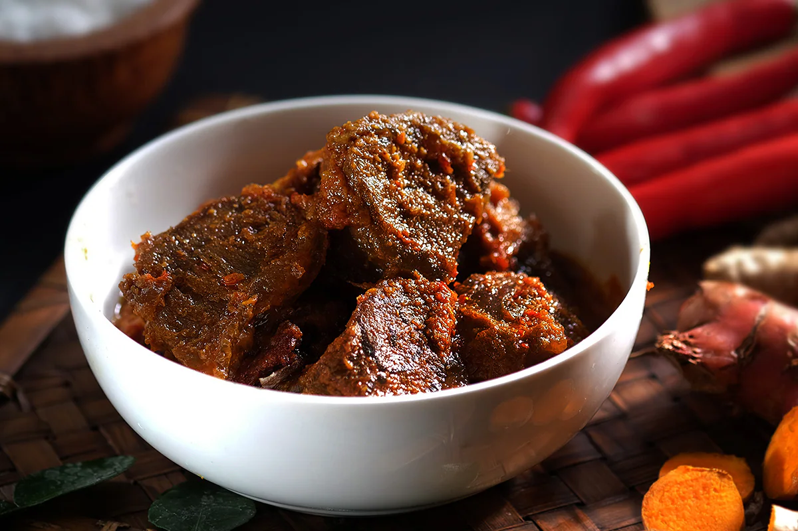

Originating from the land of Minang in West Sumatra, Rendang has gained popularity worldwide because of its distinctive savory flavor. This dish is basically made of slow-cooked, braised pieces of beef that are caramelized in coconut milk and a rich mixture of spices. Rendang is traditionally served by Indonesians to honor guests at festive occasions such as wedding celebrations and Eid-al-Fitr. The tradition still exists, but now you can find Rendang at almost every Minang restaurant in Indonesia.
A little patience and diligence is required to cook this dish, but you can find all the ingredients at your nearest Asian markets. This one-of-a-kind dish will put your skills to a test.
Prepare all the ingredients. Cut the beef into 4-cm squares that are about ½ cm thick. Blend all the curry paste ingredients together until smooth. Sauté the curry paste with coconut oil until fragrant and then pour coconut milk into the wok. Bash the lemongrass stalks and add to the wok. Stir well and then add the beef. Cook over medium heat and bring the coconut milk to a boil before reducing the heat to a simmer. Add a little water every once in a while whenever the stew is about to dry. Cook until the meat is tender and the color turns dark brown (estimated time: 3 hours). Rendang is ready to be served.